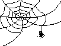

Web : Convolutions
KERNEL DESCRIPTION
laplacian 3 x 3 Laplacian edge detection
0 -1 0
-1 4 -1
0 -1 0
laplac5 5 x 5 Laplacian edge detection
-1 -1 -1 -1 -1
-1 -1 -1 -1 -1
-1 -1 24 -1 -1
-1 -1 -1 -1 -1
-1 -1 -1 -1 -1
laplac7 7 x 7 Laplacian edge detection
-1 -1 -1 -1 -1 -1 -1
-1 -1 -1 -1 -1 -1 -1
-1 -1 -1 -1 -1 -1 -1
-1 -1 -1 48 -1 -1 -1
-1 -1 -1 -1 -1 -1 -1
-1 -1 -1 -1 -1 -1 -1
-1 -1 -1 -1 -1 -1 -1
gauss 7 x 7 Gaussian kernel
1 1 2 2 2 1 1
1 2 2 4 2 2 1
2 2 4 8 4 2 2
2 4 8 16 8 4 2
2 2 4 8 4 2 2
1 2 2 4 2 2 1
1 1 2 2 2 1 1
hipass3 3 x 3 High Pass Filter
-1 -1 -1
-1 9 -1
-1 -1 -1
hipass5 5 x 5 High Pass Filter
0 -1 -1 -1 0
-1 2 -4 2 -1
-1 -4 13 -4 -1
-1 2 -4 2 -1
0 -1 -1 -1 0
sharpen3 3 x 3 Sharpening Filter
(Combines high and low pass filtering)
-1 -2 -1
2 4 2
1 2 1
lopass3 3 x 3 Low Pass Filter
1 2 1
2 4 2
1 2 1
lopass5
5 x 5 Low Pass filter
1 1 1 1 1
1 4 4 4 1
1 4 12 4 1
1 4 4 4 1
1 1 1 1 1
variance3 3 x 3 Variance Operator
Finds variance of 3x3 neighbourhood
1 1 1
1 0 1
1 1 1
variance5 5 x 5 Variance Operator
Finds variance of 5x5 neighbourhood
0 1 1 1 0
1 1 1 1 1
1 1 0 1 1
1 1 1 1 1
0 1 1 1 0
variance7 7 x 7 Variance Operator
Finds variance of 7x7 neighbourhood
0 0 1 1 1 0 0
0 1 1 1 1 1 0
1 1 1 1 1 1 1
1 1 1 0 1 1 1
1 1 1 1 1 1 1
0 1 1 1 1 1 0
0 0 1 1 1 0 0
denoise 3 x 3 Noise removal
Pixel replaced by area average if
1 1 1 pixel value is less than lower
1 0 1 limit.
1 1 1
erode For pixel value: Set to:
(by hits) < threshold original minimum
>= threshold && original value
(# adjacent pixels
>= threshold) >
hits.
>= threshold && original minimum
(# adjacent pixels
>= threshold) <
hits.
dilate For pixel value: Set to:
(by hits) >= threshold original value
< threshold && original maximum
(# adjacent pixels
>= threshold) >
hits.
>= threshold && original minimum
(# adjacent pixels
>= threshold) <
hits.
binary skeleton Reduces image area to a skeleton.
Works on binary images only.
test Experimental program used to
determine proximity of neighboring
pixels having certain preset values.
Replaces all pixels having value outval
with distance to nearest pixel having
value: inval.
Source: convolve.html
Updated: 12/29/97
ArDean Leith